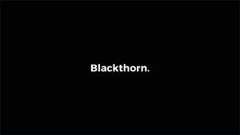

Trade Mark Journal No.2025/034 22 August 2025
UK00004246557 8 August 2025 (35,36,45)

- Class 35
- Advisory services relating to business risk management.
- Class 36
- Insurance; Insurance underwriting; Underwriting (Insurance -); Insurance underwriting in the field of professional liability insurance; Medical insurance; Insurance broking; Brokerage (Insurance -); Brokerage of insurance; Insurance brokerage; Medical insurance underwriting; Non-life insurance underwriting; Provision of insurance services to insurance companies; Travel insurance; Insurance services; Brokerage of non-life insurance; Insurance underwriting services; Underwriting of insurance (Services for the -); Property insurance underwriting; Underwriting of health insurance (Services for the -); Life insurance underwriting; Insurance actuarial services; Insurance for businesses; Insurance agencies; Motor insurance; Life insurance; Brokerage of casualty insurance; Professional indemnity insurance; Insurance consultancy; Marine insurance underwriting; Insurance underwriting consultancy; Life insurance brokerage; Marine insurance; Insurance brokering; Insurance underwriting and appraisals and assessment for insurance purposes; Private health insurance; Insurance brokers (Services of -); Marine accidents insurance underwriting; Insurance administration; Underwriting of company insurance (Services for the -); Vehicle insurance services; Underwriting of personal accident insurance (Services for the -); Insurance for hotels; Motor insurance brokerage; Insurance consultation; Transport insurance brokerage; Insurance advice; Life insurance agencies; Insurance research; Research (Insurance -); Insurance brokerage services; Marine transportation insurance underwriting; Insurance agency and brokerage; Arranging insurance; Insurance (Arranging of -); Underwriting of business insurance (Services for the -); Travel insurance services; Medical insurance brokerage services; Insurance brokerage for property; Insurance agency services; Provision of insurance services to reinsurance companies; Service insurance contracts; Underwriting relating to transport insurance; Personal insurance services; Settlement of insurance claims; Insurance management services; Underwriting relating to marine insurance; Insurance risk management; Arranging of travel insurance; Insurance advisory services; Insurance arranging services; Insurance consultation services.
- Class 45
- Security consultancy; Physical security consultancy.
CHC Insurance Services Limited